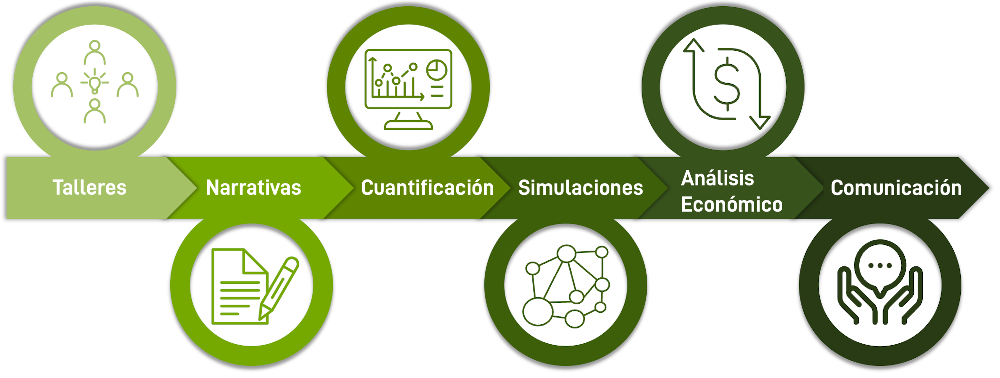

Proyecto
Flujo de trabajo

El proceso para desarrollar escenarios normativos y positivos para la naturaleza, orientados al futuro desarrollo del paisaje en Perú, junto con la evaluación de sus efectos en el uso y cobertura de la tierra (LULC), la biodiversidad y los servicios ecosistémicos (BES), se realiza en seis etapas.
1. Talleres:
El proceso participativo del proyecto incluye una serie de talleres, tanto nacionales como regionales, que reúnen a partes interesadas y expertos. El objetivo es identificar en colaboración los aspectos deseables e indeseables del futuro cambio paisajístico.
2. Narrativas:
Además de los talleres, se realiza una encuesta en línea. A partir de la información obtenida en los talleres y la encuesta, se crean escenarios exploratorios y normativos. Los escenarios exploratorios consisten en escenarios negativos y en que todo sigue igual, mientras que los escenarios normativos consisten en escenarios positivos para la naturaleza.
3. Cuantificación:
Las tasas de cambio del uso y la ocupación del suelo (LULCC) se determinan para cada escenario cuantificando las tendencias de los factores socioeconómicos, biofísicos y climáticos.
4. Simulaciones:
Durante la fase de simulación, se determinan los Servicios Ecosistémicos (ES) y la distribución de especies para cada escenario, teniendo en cuenta el futuro Uso y Cubierta del Suelo (LULC) como uno de los factores de entrada.
5. Análisis Económico:
Las características económicas de cada escenario se cuantifican en función del uso y la ocupación del suelo (LULC) y de los servicios ecosistémicos (ES).
6. Comunicación:
Como parte de la metodología del proyecto, se presentarán resultados provisionales para refinar los escenarios. Los resultados finales y los conjuntos de datos se pondrán a disposición del público, contribuyendo así a la base de conocimientos para futuros proyectos.
El procedimiento utilizado en NASCENT-Perú se basa en la metodología utilizada en ValPar.CH
Lugares de los talleres
Calendario